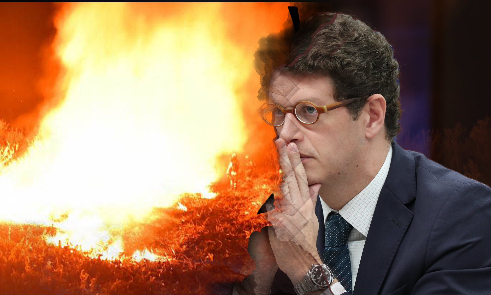
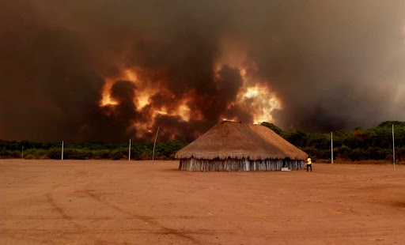
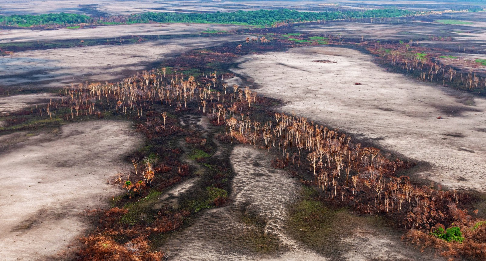
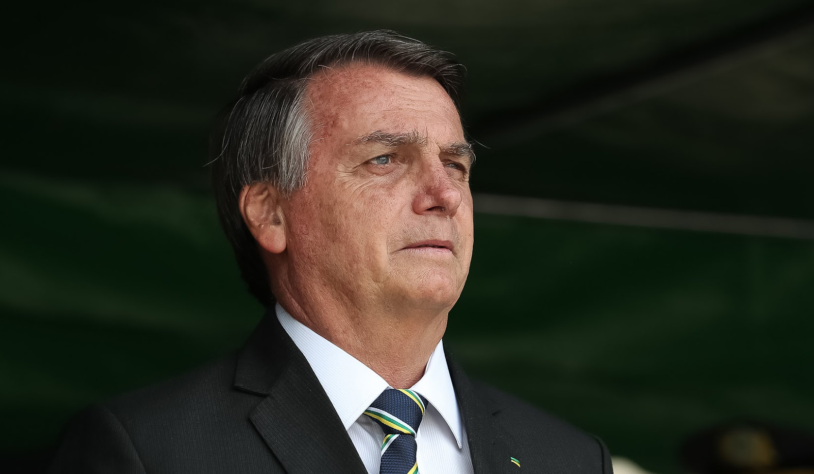

Tecnologia > Inovações
por Dr.Wendller
Atualizado em 07/11/2020
Do início ao fim: o meio ambiente no governo Bolsonaro
Especialistas da USP comentam desmonte na pasta e suas consequências ambientais, diplomáticas e humanas

Arte: Gabriella Sales. Fotografias: Silvio Andrade e André Zumak (IHP) e Lula Marques / Fotos Públicas
A 135ª reunião do Conselho Nacional do Meio Ambiente (Conama), realizada no dia 28 de setembro, foi marcada pela queda de duas resoluções que restringiam o desmatamento e a ocupação em áreas de preservação ambiental de vegetação nativa, como restingas e manguezais. A decisão do principal órgão consultivo do Ministério do Meio Ambiente mostra — de acordo com a professora Sylmara Lopes Francelino Gonçalves Dias, do Departamento de Gestão Ambiental da Escola de Artes, Ciências e Humanidades (EACH) da USP — “a proposta de desmantelamento da política ambiental do atual governo”.
“A estratégia de desmonte fica clara quando olhamos para a aplicação dos recursos do orçamento da União para o Ministério do Meio Ambiente.”
– Sylmara Lopes Francelino Gonçalves Dias
De janeiro a setembro deste ano, o Ministério do Meio Ambiente, liderado por Ricardo Salles, gastou apenas 0,4% da verba anual prevista para a proteção da biodiversidade e combate às mudanças climáticas. Dos R$ 26,5 milhões disponíveis, apenas R$ 105.409,00 foram utilizados nos primeiros oito meses de 2020.
Ainda com relação às verbas, os montantes orçados para a área se mostram tão preocupantes quanto a execução orçamentária. O valores destinado pelo Governo Federal ao Ministério do Meio Ambiente seguem tendência de queda: entre 2017 e 2018, por exemplo, a redução foi de R$ 480,5 milhões.
Segundo Cristiano Luis Lenzi, também professor do Departamento de Gestão Ambiental da EACH, isso se dá porque o governo vigente enxerga a preservação ambiental como um elemento de contraposição ao princípio econômico liberal adotado: “O ministro Salles parece representar uma onda desregulamentadora tardia que vê as leis ambientais como ‘grilhões’ que impedem a eficiência do mercado. O que significa que a política ambiental é uma extensão da agenda econômica que o atual governo busca seguir”
Durante episódios marcantes como o das manchas inexplicáveis que surgiram no litoral brasileiro em meados de 2019 e os das queimadas massivas ocorridas na Amazônia e no Pantanal, discussões sobre a gestão do meio ambiente ganharam mais espaço. No entanto, a postura negligente de Jair Bolsonaro para com o temas ambientais dá protagonismo constante à pauta desde a posse do presidente. Quiçá desde antes disso.

Fogo atinge aldeia Kuikuro, na terra indígena do Xingu, nordeste do Mato Grosso, em setembro. Foto: Takumã Kuikuro/ Fotos Públicas
A tragédia (publicamente) anunciada
Quando ainda candidato, Jair Bolsonaro apontava que, caso assumisse a presidência, iria fundir Ministério do Meio Ambiente com o da Agricultura. Tal movimento, segundo ele, acabaria com o conflito entre conservação e produção. No entanto, a ideia acabou se esgotando por pressão dos próprios ruralistas, que se preocupavam com um possível desgaste da imagem do Brasil no exterior.
E os demonstrativos de que a política ambiental sofreria mudanças profundas, na hipótese de o então candidato do PSL se eleger, não paravam por aí. Às vésperas das eleições, o parlamentar garantia que, quando chefe do Executivo, retiraria o Brasil do Acordo de Paris, que rege medidas internacionais para a redução de emissão de gases estufa.
Além disso, a preservação das populações nativas também se tornava uma preocupação, à medida que Bolsonaro dava declarações ameaçando a legitimidade de seus territórios. Em meados de 2018 chegou a afirmar: “No que depender de mim, não tem mais demarcação de terra indígena”.
O desmatamento das instituições
Eleito em 2018, o capitão reformado chegou à chefia de Estado e as promessas de mudanças nas políticas ambientais passaram a ser colocadas em prática. O ISA (Instituto Socioambiental) publicou, em janeiro de 2019, uma análise de medidas provisórias (MPs) e decretos implementados nos primeiros dias da gestão de Ricardo Salles e constatou que foi produzida, no meio ambiente, a mais drástica reestruturação de órgãos governamentais de primeiro escalão desde o governo Collor (1990-1992).
“O principal esforço [da gestão Salles] se volta para a desestruturação de órgãos responsáveis pelo processo de implementação das políticas ambientais no país.”
– Cristiano Luis Lenzi
Em suma, a reestruturação diminuiu a capacidade do ministério de formular e conduzir políticas. A competência de combate ao desmatamento, núcleo da área ambiental federal desde os anos 1980, foi diluída, assim como o aparelhamento que visava dar suporte às populações indígenas.
O Departamento de Educação Ambiental não mais existe, e a função executiva do Departamento de Desenvolvimento Sustentável foi retirada (restando apenas a disposição de realizar estudos). Isso sem contar a migração da Agência Nacional de Águas (ANA) para o Ministério de Desenvolvimento Regional.
Outro movimento a ser ressaltado é a transferência do Cadastro Ambiental Rural (CAR) para o Ministério da Agricultura, o que vem dificultando o combate aos crimes ambientais. O órgão realiza o registro de áreas que podem ou não ser desmatadas e que precisam ser recuperadas em cada propriedade rural. Tal atribuição, segundo Sylmara, a pasta de agricultura não possui autonomia suficiente para cumprir com eficiência.
O desaparelhamento das instituições se torna ainda mais preocupante se considerado que, nos últimos anos, as taxas de desmatamento voltaram a subir no Brasil. Entre agosto de 2017 e julho de 2018, por exemplo, foram destruídos 7.900 km² de floresta na Amazônia, um aumento de 13,7% em relação ao período anterior, de acordo com dados do Instituto Nacional de Pesquisas Espaciais (Inpe).

Em julho, Floresta Amazônica bateu recorde de desmatamento. Foto: Vinícius Mendonça/Ibama / via Fotos Públicas
A agenda climática e o clima quente nas relações internacionais
A profundidade da mudança implementada dificulta, inclusive, a identificação das atribuições mais afetadas pela chegada de Bolsonaro e Salles. De qualquer forma, destaque deve ser atribuído ao desmantelamento da agenda climática brasileira.
Para além das consequências ambientais que a atitude pode acarretar a longo prazo, a mudança de postura tem trazido prejuízos diplomáticos e comerciais ao Brasil. A OCDE (Organização para a Cooperação e Desenvolvimento Econômico), conhecida como “bloco dos países ricos”, e outros líderes da comunidade europeia têm apontado que os posicionamentos do atual governo brasileiro ameaçam o acordo comercial entre União Europeia e Mercosul.
As relações internacionais do atual governo brasileiro, por sinal, vêm sendo marcadas pelo embate entre Bolsonaro e líderes europeus em relação à questão ambiental. Em 2019, o chefe do Executivo trocou farpas publicamente com Emmanuel Macron, presidente da França, e Angela Merkel, primeira-ministra da Alemanha, por exemplo.
A agenda climática e o clima quente nas relações internacionais
O auge de tais dissidências se deu em agosto do ano passado, quando a maior floresta tropical do mundo enfrentava uma onda de queimadas sem precedente: 24.944 km² da Amazônia brasileira foram destruídos. Por um lado, Macron e Merkel apontavam negligência do Brasil ao lidar com a situação; por outro, Bolsonaro acusava os europeus de adotarem uma postura colonialista ao tentar interferir na política interna de seu país.
“A pressão internacional sobre o desmatamento da Amazônia não é nova”, relembra o professor Pedro Feliú Ribeiro, do Instituto de Relações Internacionais (IRI) da USP. Em 2007, quando a Amazônia, mais uma vez, enfrentava um período de queimadas, a comunidade internacional desferiu duras críticas à política ambiental do governo Lula.
O que intensifica o embate no momento vigente é a resposta do atual presidente brasileiro, que, diferentemente dos anteriores, “desafia os constrangimentos internacionais e reafirmam a soberania irrestrita, perdendo inclusive cooperação internacional”, de acordo com o especialista.
Outro episódio marcante para ambas, a pasta do meio ambiente e as relações exteriores, foi o aparecimento de inúmeras manchas de óleo no litoral brasileiro em meados de 2019. Mais uma vez criticado internacionalmente por sua postura ao lidar com a situação, o governo Bolsonaro voltou a desferir ataques. Desta vez o alvo foi a Venezuela, acusada pelo presidente brasileiro de ser responsável pelo fenômeno.
“Governos populistas sem projeto nacional como o governo Bolsonaro precisam, mais do qualquer outro, de inimigos internos e externos para sua sustentação. A Venezuela cumpre o papel do segundo. Assim, o desastre do derramamento do óleo entra nessa lógica, assim como as acusações de narco-Estado.”
– Pedro Feliú Ribeiro
Para além do planeta, os humanos
Para além do prejuízo ambiental e diplomático, as mudanças implementadas podem acarretar perdas ainda maiores: culturais e, até mesmo, humanas. Com a extinção da Secretaria de Extrativismo, Desenvolvimento Rural e Combate à Desertificação não se sabe qual será o futuro da Política Nacional de Gestão Territorial e Ambiental de Terras Indígenas (PNGATI).
Os quase 14% da área do Brasil considerados territórios indígenas, que estão entre as localidades mais preservadas do país em termos de flora e fauna, tinham a PNGATI como grande aliada. Com o apoio da iniciativa, se somam, entre finalizados e elaborados, mais de 104 Planos de Gestão Ambiental e Territorial, segundo a Fundação Nacional do Índio (Funai).
Por fim, a nova estrutura do Ministério do Meio Ambiente não comenta o futuro do Plano Nacional de Fortalecimento das Comunidades Extrativistas e Ribeirinhas (Planafe). Mais um dos desaparelhamentos que endossam a postura do governo brasileiro vigente. Desde de que ganhou destaque no debate público, Jair Bolsonaro já afirmou que considera o tamanho do território indígena “abusivo”, que não deveria haver “um centímetro de território demarcado para quilombola” e acusou populações ribeirinhas de incendiar a Amazônia.
“Esse não é um discurso de quem está compromissado com uma leitura séria e realista do problema. O governo oferece um discurso ideológico sobre a questão onde culpabiliza inocentes e tenta inocentar os culpados.”
– Cristiano Luis Lenzi
Jair Bolsonaro, desde antes de sua eleição, nunca escondeu sua antipatia para com as políticas ambientais. Foto: Marcos Corrêa/PR / via Fotos Públicas